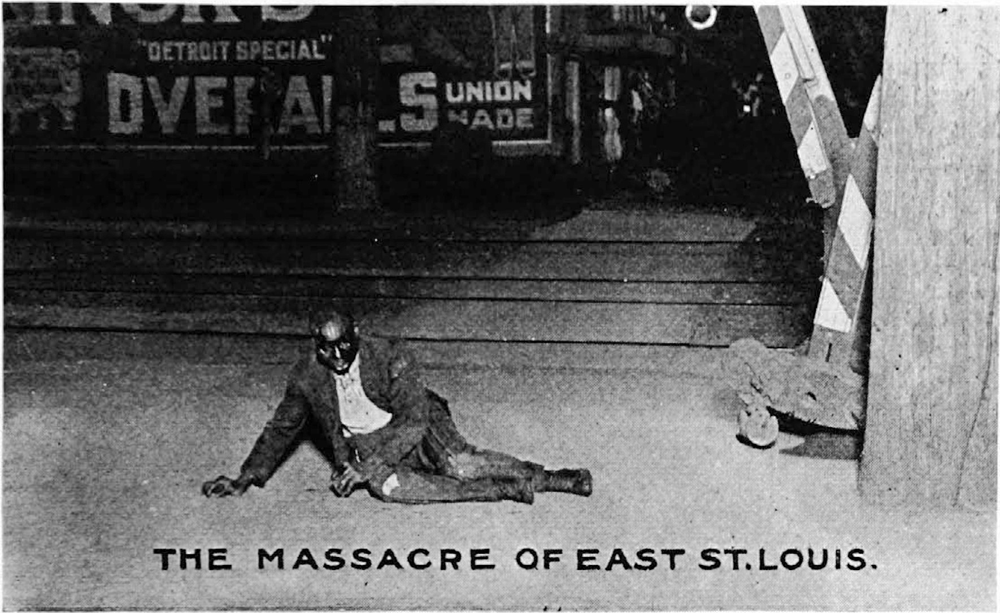
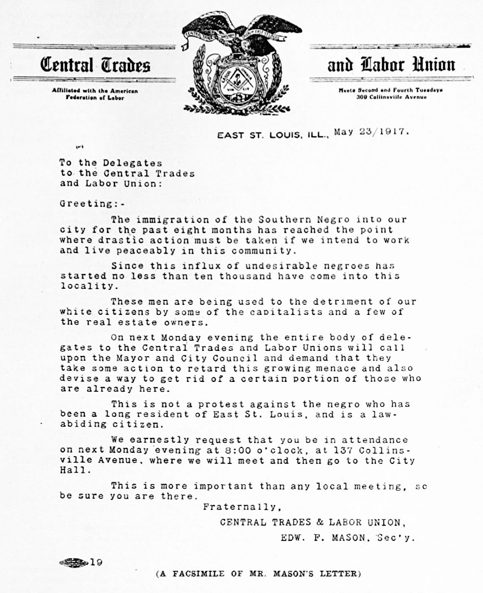
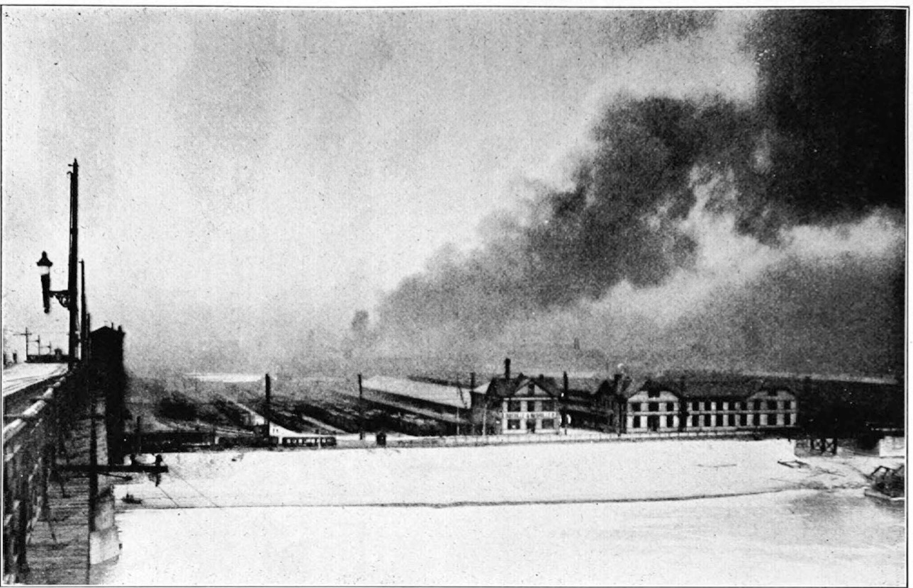
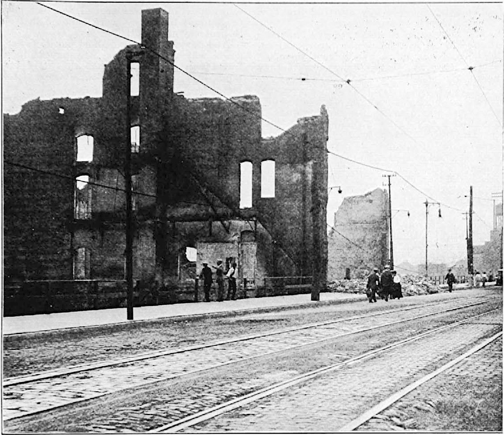
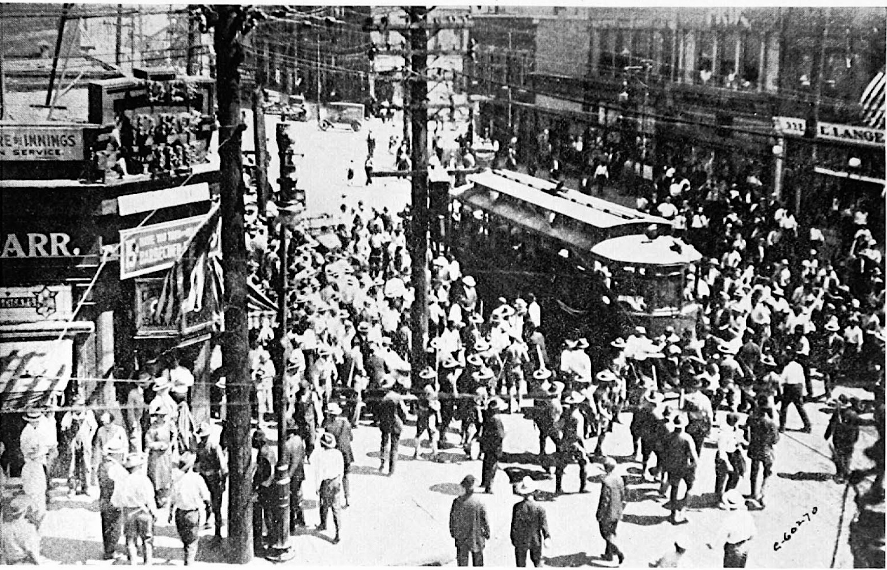
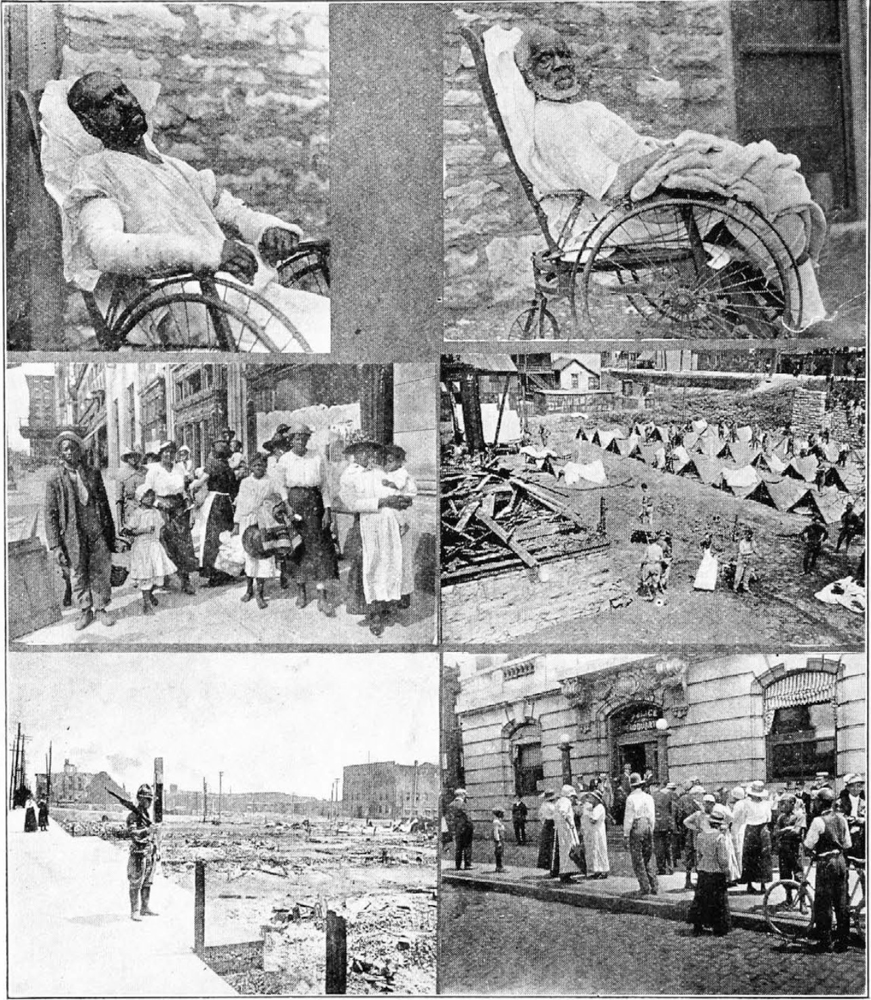
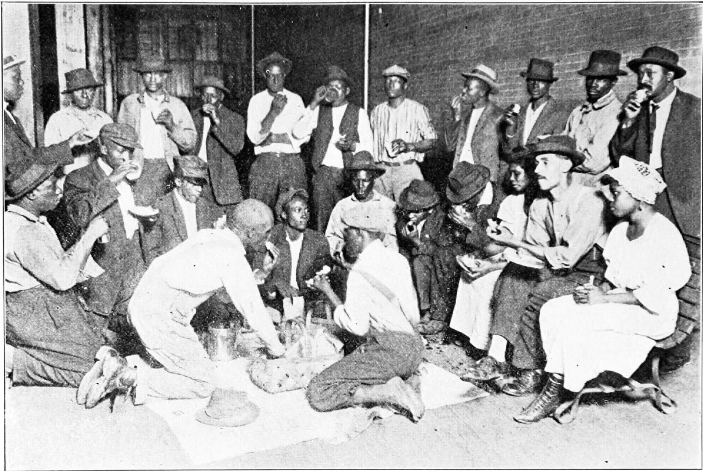
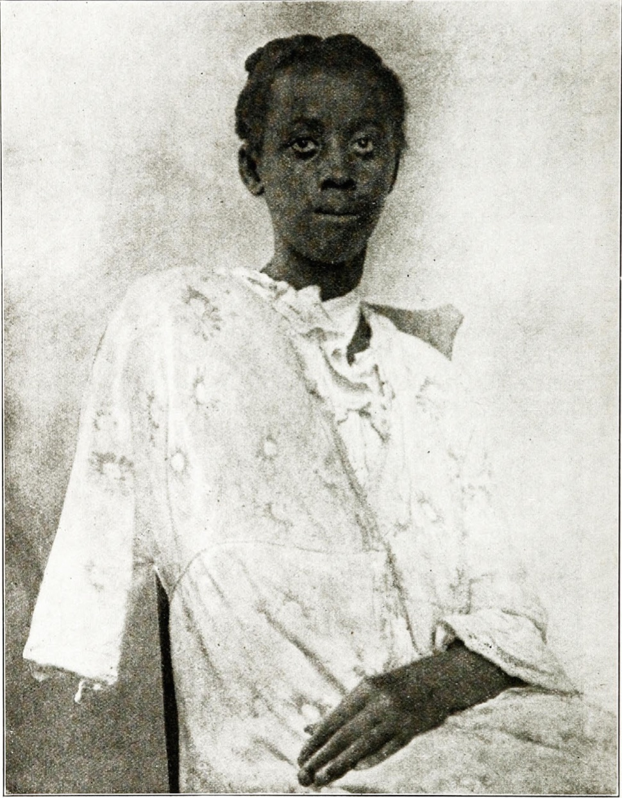
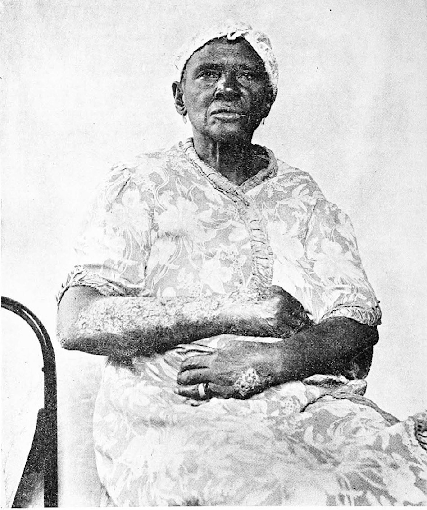

The Massacre in East St. Louis

The National Association for the Advancement of Colored People 70 Fifth Avenue, New York, sent Martha Gruening and W. E. Burghardt Du Bois to East St. Louis, as special investigators of the recent outrages. These two collected in person the facts and pictures from which this article is compiled.
On the 2nd of July, 1917, the city of East St. Louis in Illinois added a foul and revolting page to the history of all the massacres of the world. On that day a mob of white men, women and children burned and destroyed at least $400,000 worth of property belonging to both whites and Negroes; drove 6,000 Negroes out of their homes; and deliberately burdered, by shooting, burning and hanging, between one and two hundred human beings who were black.
Such an outbreak could not have been instantaneous. There must have been something further reaching even than an immediate cause to provoke such a disaster. The immediate cause usually given is as follows: On the evening of July 1, white “joy riders” rode down a block in Market Street, which was inhabited by Negroes, and began to fire into the houses. The Negroes aroused by this armed themselves against further trouble. Presently a police automobile drove up containing detectives and stopped. The Negroes thinking that these were the “joy riders” returning opened up fire before this misunderstanding was removed, and two of the detectives were killed. Some of the policemen were in plain clothes.
One naturally wonders why should the white “joy riders” fire in the first place. What was their quarrel with the Negroes? In answering that question we get down to the real story. It is here we meet with the facts that lay directly back of the massacre, a combination of the jealousy of white labor unions and prejudice.
East St. Louis is a great industrial center, possessing huge packing and manufacturing houses, and is, therefore, one of the biggest markets in the country for common unskilled labor. The war, by the deportation of white foreign workers, caused a scarcity of labor and this brought about the beginning of a noticeable influx of Negroes from the South. Last summer 4,500 white men went on strike in the packing plants of Armour & Co., Morris & Co., and Swift & Co., and Negroes from the South were called into the plants as strikebreakers. When the strike ended the Negroes were still employed and that many white men failed to regain their positions. The leaders of various labor unions realized that the supply of Negroes was practically inexhaustible and that they were receiving the same wages as their white predecessors and so evidently doing the same grade of work. Since it was increasingly possible then to call in as many black strike-breakers as necessary, the effectiveness of any strike was accordingly decreased. It was this realization that caused the small but indicative May riots. Evidently, the leaders of the labor unions thought something must be done, some measure sufficiently drastic must be taken to drive these interlopers away and to restore to these white Americans their privileges. The fact that the Negroes were also Americans meant nothing at such a time as this.
The leader of a labor union must be an opportunist. The psychology of any unskilled laborer is comparatively simple. To the knowledge then that his job is being held by an outsider add his natural and fostered prejudice against an outsider who is black and you have something of the mental attitude of the rioters of East St. Louis. Doubtless it was with some such prophetic vision as this that Edward F. Mason, secretary of the Central Trades and Labor Union, issued a letter, the facsimile of which appears on the opposite page.

One point in particular is emphasized, that of color: “The Southern Negro,” writes Mr. Mason, “has come into our community. No less than ten thousand of undesirable Negroes,” he continues, “have poured in and are being used to the detriment of our white citizens.” There is the appeal direct to prejudice. It is not that foreigners—Czechs, Slovaks, Lithuanians—or whatever ethnic division is least indigenous to East St. Louis—it is not that they are ousting Americans of any color or hue, but the “Southern Negro,” the most American product there is, is being used “to the detriment of our white citizens.”
Mr. Mason has no hesitancy in suggesting “that some action should be taken to retard this growing menace” and “to get rid of a certain portion of those who are already here.” Was not Mr. Gompers’ excuse in Carnegie Hall a faint echo of all this?
Mr. Mason wants to be fair. “This is not a protest against the Negro who has been a long resident”—so runs his superb English—“of East St. Louis, and is a law-abiding citizen of the state.” In East St. Louis labor leaders are the arbiters of legal conduct and therefore 10,000 Negroes become undesirable citizens because they are strike-breakers and black.
That the July riot grew out of the meeting called by Mr. Mason (see facsimile), we are not prepared to say; but that it grew out of this attitude is only too apparent. By all accounts of eye-witnesses, both white and black, the East St. Louis outrage was deliberately planned and executed.
Says Richard L. Stokes, writing in the St. Louis Globe-Democrat for Sunday, July 8:
On the night of May 28th a delegation of about 600 union men marched to the City Hall to appeal to the authorities to prevent the importation of any more Negroes. Among them were many of the Aluminum Ore Company strikers. They took possession of an auditorium, and some cf the leaders made speeches advising that in case the authorities took no action, they should resort to mob law.
When genuine mob law did finally reign on July 2, the scenes were indescribable. Germany has nothing on East St. Louis when it comes to “frightfulness.” Indeed in one respect Germany does not even approximate her ill-famed sister. In all the accounts given of German atrocities, no one, we believe, has accused the Germans of taking pleasure in the sufferings of their victims. But these rioters combined business and pleasure. These Negroes were “butchered to make” “holiday.”
Carlos F. Hurd, an eye-witness, realizes this fact and speaks of it in the article which he publishes July 3 in the St. Louis Post-Dispatch, of which he is a staff-reporter. Mr. Hurd writes:
A mob is passionate, a mob follows one man or a few men blindly; a mob sometimes takes chances. The East St. Louis affair, as I saw it, was a man hunt, conducted on a sporting basis, though with anything but an East St. Louis the fair play which is the principle of sport. The East St. Louis men took no chances, except the chance from stray shots, which every spectator of their acts took. They went in small groups, there was little leadership, and there was a horribly cool deliberateness and a spirit of fun about it.
Get a nigger,” was the slogan, and it was varied by the recurrent cry, “Get another!” It was like nothing so much as the holiday crowd, with thumbs turned down, in the Roman Coliseum, except that here the shouters were their own gladiators, and their own wild beasts.

The Fire. St. Louis Star.
He goes on with another horrible account of which he was also an eye-witness:
A Negro, his head laid open by a great stone-cut, had been dragged to the mouth of the alley on Fourth Street and a small rope was being put about his neck. There was joking comment on the weakness of the rope, and everyone was prepared for what happened when it was pulled over a projecting cable box, a short distance up the pole. It broke, letting the Negro tumble back to his knees, and causing one of the men who was pulling on it to sprawl on the pavement.An old man, with a cap like those worn by street car conductors, but showing no badge of car service, came out of his house to protest. “Don’t you hang that man on this street,” he shouted. “I dare you to.” He was pushed angrily away, and a rope, obviously strong enough for its purpose, was brought.;
Right here I saw the most sickening incident of the evening. To put the rope around the Negro’s neck, one of the lynchers stuck his fingers inside the gaping scalp and lifted the Negro’s head by it, literally bathing his hand in the man’s blood.
Get hold, and pull for East St. Louis!” called a man with a black coat and a new straw hat, as he seized the other end of the rope. The rope was long, but not too long for the number of hands that grasped it, and this time the Negro was lifted to a height of about seven feet from the ground. The body was left hanging there.
These accounts make gruesome reading, but they are all true. Hugh L. Wood paints in the St. Louis Republic another horrible picture. He says:
A Negro weighing 300 pounds came out of the burning line of dwellings just north and east of the Southern freight house. His hands were elevated and his yellow face was speckled with the awful fear of death.Get him!” they cried. Here was a chance to see suffering, something that bullets didn’t always make.
So a man in the crowd clubbed his revolver and struck the Negro in the face with it. Another dashed an iron bolt between the Negro’s eyes. Still another stood near and battered him with a rock.
Then the giant Negro toppled to the ground. “This is the way,” cried one. He ran back a few paces, then ran at the pros—black at full speed and made a flying leap.
His heels struck right in the middle of the battered face. A girl stepped up and struck the bleeding man with her foot. The blood spurted onto her stockings and men laughed and grunted.
No amount of suffering awakened pity in the hearts of the rioters. Mr. Wood tells us that:
A few Negroes, caught on the street, were kicked and shot to death. As flies settled on their terrible wounds, the gaping-mouthed mobsmen forbade the dying blacks to brush them off. Girls with blood on their stockings helped to kick in what had been black faces of the corpses on the street.
The St. Louis Republic has still a further touch:
A Negro lay a block east on Broadway, with his face beaten in. He was not dead. An ambulance, driven by white men, dashed up.If you pick up that skunk we’ll kill you, too,” cried the crowd.
I’ve got a wife and four children at home,” said the white-faced ambulance man as he climbed back on the wagon.
When the fire had eaten its way that far the body was tossed into the flames. Two blocks further east lay a Negro who had been beaten until he was dying. “Let’s string him up,” shouted a man. _A rope was brought and the dying black in a moment was dangling from a pole. Several “good measure” shots were fired into the body and the crowd went further on.
Mr. Hurd who writes with much restraint tells how he saw a man covered with blood and half conscious, raise himself on his elbow and look feebly about, when a young man, standing directly behind him, lifted a flat stone in both hands and hurled it upon his neck. This young man was much better dressed than most of the others. He walked away unmolested.
The violence was confined not only to men. Women were in many cases the aggressors and always ready to instigate and abet.
One woman, according to the St. Louis Globe-Democrat, wanted to “cut the heart out” of a Negro, a man already paralyzed from a bullet wound, who was being then maltreated at the hands of a mob.
Mr. Hurd writes: > I saw Negro women begging for mercy and pleading that they had harmed no one set upon by white women of the baser sort who laughed and answered the coarse sallies of men as they beat the Negresses’ faces and breasts with fists, stones and sticks. I saw one of these furies fling herself at a militiaman who was trying to protect a Negress, and wrestle with him for his bayonetted gun, while other women attacked the refugee.Let the girls have her,” was the shout as the women attacked one young Negress. The victim’s cry, “Please, please, I ain’t done nothing,” was stopped by a blow in the mouth with a broomstick, which one of the women swung like a baseball bat. Another woman seized the Negress’ hands, and the blow was repeated as she struggled helplessly. Fingernails clawed her hair and the sleeves were torn from her waist, when some of the men called, “Now let her see how fast she can run.” The women did not readily leave off beating her, but they stopped short of murder, and the crying, hysterical girl ran down the street.
An older Negress, a few moments later, came along with two or three militiamen, and the same women made for her. When one of the soldiers held his gun as a barrier, the woman with the broomstick seized it with both hands, and struggled to wrest it from him, while the others, striking at the Negress, in spite of the other militiamen, frightened her thoroughly and hurt her somewhat.
To this the St. Louis Republic adds:
Seized with the mob spirit, two young white girls climbed or a car at Broadway and Main Street at about 4 p. m. and dragged a Negress from her seat. As they dragged the struggling Negress through the door to the street there was a great cheer from men on the sidewalk.As the Negress attempted to break away from her assailants one of the girls—for they were only about 17 years old—pulled off her shoe and started to beat the victim over the head. The victim flinched under the blows of the girl and was bleeding when she was rescued by militiamen.
The girls were not arrested and started to walk away from the scene. There were bloodstains on their clothes and as they passed their friends they told about the part they had played in the riot.
But this sort of Negro-baiting did not make a strong enough appeal to the jaded senses of the mob. Surely there must be some other means of adding to such pleasurable excitement. Somebody suggested fire. The idea was immediately accepted. Says John T. Stewart:
The first houses were fired shortly after 5 o’clock. These were back of Main street, between Broadway and Railroad avenue. Negroes were “flushed” from the burning houses, and ran for their lives, screaming and begging for mercy. A Negro crawled into a shed and fired on the white men. Guardsmen started after him, but when they saw he was armed, turned to the mob and said:He’s armed, boys. You can have him. A white man’s life is worth the lives of a thousand Negroes.”
A few minutes later matches were applied to hastily gathered debris piled about the corner of one of three small houses 100 feet from the first fired. These were back of the International Harvester Company’s plant. Eight Negroes fied into the last of the houses and hid in the basement. When roof and walls were about to fall in, an aged Negro woman came out. She was permitted to walk to safety. Three Negro women followed and were not fired upon. Then came four Negro men, and 100 shots were fired at them. They fell. No one ventured out to see if they were dead, as the place had come to resemble No Man’s Land, with bullets flying back and forth and sparks from the fires falling everywhere.
A Negro who crawled on hands and knees through the weeds was a target for a volley. The mob then turned back to Main street and another Negro was spied on a Main Street car. He was dragged to the street and a rioter stood over him, shooting.
The crowd then turned to Black Valley. Here the greatest fire damage was caused. Flames soon were raging and the shrieking rioters stood about in the streets, made lurid by the flames, and shot and beat Negroes as they fled from their burning homes.
This district today was a waste of smouldering debris. Firemen fought the flames all night. In this stretch were burned the Southern Railroad freight house, the HillsThomas Lime and Cement Company plant and the Broadway Opera House. By desperate effort, firemen saved the Public Library Building, the Bon Bon Baking Powder Company, and the J. C. Grant Chemical Company. The warehouses of the latter ee 1,000 gallons of gasoline and coal oil.
It was rumored that many Negroes were burned to death in the Broadway Opera House, an abandoned theatre structure. Bystanders claimed to have seen men, women and children seek refuge in the basement of the building.
Rioters formed in gangs and trooped through the street, chasing Negroes when they met them, and intimidating white and Negro men alike, if they attempted to offer resistance.
Here again according to the St. Louis Globe-Democrat, the women and children took a hand:
They pursued the women who were driven out of the burning homes, with the idea, not of extinguishing their burning clothing, but of inflicting added pain, if possible. They stood around in groups, laughing and jeering, while they witnessed the final writhings of the terror and pain wracked wretches who crawled to the streets to die after their flesh had been cooked in their own homes.
Where was the militia? At best they stood idly about in tacit sympathy with the rioters. It was not their business to protect Negroes against white men. Richard L. Stokes makes their attitude plain in the St. Louis Globe-Democrat. He says:
I wish to point out that in these riots all the antipathy toward the Negro was not confined to East St. Louis. Among the first militia to arrive from Central and Northern Illinois, were not a few who declared feelingly their understanding they were not here to protect Negroes against whites, but to guard whites against Negroes.

Broadway Opera House after the fire. $700,000 damage was done in this vincinity. St. Louis Globe Democrat.
Subsequent testimony conflicted with this statement and showed that most of the militia, as one would suppose from the location of East St. Louis, came from Southern Illinois.
And John T. Stewart continues in the St. Louis Star:
The major riot ensued at 4:30, with not a Negro in sight. A crowd of fifty young men and boys dribbling aimlessly south on Collinsville came to a pawn shop. At once there were shouts of “get his guns,” and the whites crowded through the shop doors and looted the shop of every weapon and all its ammunition. A boy not over fourteen years old emerged with a rifle and several rounds of cartridges. Another boy dragged a shotgun too big for him to carry.Some of the militia were active in the fray. Miss Gruening tells of the two soldiers, members of Troop L, from Olney. She passed them a few days after the riot near Cahokia Creek and entered into conversation with them. They boasted that here “seven niggers” were thrown into the creek, “and every time the niggers came up people rocked them till they was all drowned.” She imitated their vernacular. “And how many ‘niggers’ did you boys actually kill?” she asked. They were modestly uncertain—they were not quite sure how many, but they had certainly shot to kill. That had been their orders.A detachment of militia came along and made a half-hearted effort to disarm the civilians. The only persons who gave up their arms were boys. One white man walking beside me patted a large revolver in his shirt bosom. It was fully loaded. Another handed him two additional rounds of cartridges. Two guards passed.
You’ve got nothing on me,” the rioter said, and showed the militiaman his revolver and shells. When the militiaman laughed, the rioter threw his disengaged arm around the guardsman’s shoulder and they disappeared around the corner.
> What!” asked Miss Gruening, “to shoot to kill ‘niggers’?”
They grinned cheerfully. “Oh, no. Only to kill all we saw starting fires.”
And did you see any starting fires? >
> No, all we saw was niggers flying.
And they were to disarm every “nigger” of any kind of weapon—guns, razors, knives. They got everything away from them.
Miss Gruening wanted to know if they hadn’t disarmed any whites at all.
They were doubtful. Yes, one remembered he had disarmed a drunken white man who was attacking a white woman.
Subsequently, Miss Gruening met with the Military Board of Inquiry, whose members were: Brigadier General Henry R. Hill, Brigadier General James E. Stewart, Colonel M. J. Foreman, Colonel Taylor E. Brown, Major Edward B. Tollman, Colonel William D. McChesney and Major Richard J. Abbott. She told her story and offered to identify the boys.
The Board was unenthusiastic and a trifle skeptical. Didn’t Miss Gruening really suppose that the boys were joking? Doubtless they merely wanted to look big in the eyes of a lady. Yes, such jesting was in bad taste, but boys will be boys. At any rate identification was impossible because the Olney troops had been withdrawn.
Miss Gruening offered to go to Olney, to go anywhere to identify the two guardsmen.
Well, that was unnecessary, it was rather late now—on the third day of the inquiry—to institute such a complaint. Why hadn’t the lady gone immediately to the commandant, who was present, and made her charge.
Miss Gruening had already been to the commandant on another matter and had been rebuffed.
As she was about to leave they laid on her a solemn charge.
Young lady, as a writer, you have a heavy responsibility. If you go away and give the world the impression that the boys of the Illinois Militia or their officers failed in their duty you will be doing a serious injustice. We have gone exhaustively into the evidence. We have followed up every accusation made against Illinois guardsmen and we find not a single instance in which they misconducted themselves. On the contrary, we have found innumerable instances of the greatest heroism on the part of these young and untrained boys—instances in which Negroes were rescued from crowds of two or three hundred people. We have examined every body (Query: the burned and drowned bodies too?) and none of the wounds were made by rifles.
Miss Gruening inquired why, in the case of so much heroism, were so many Negroes killed and only eight white men. There was no answer to that.
Many white people told Miss Gruening that the militia had done remarkably well when one considered that most of them came from towns in Southern Illinois, like Olney, for instance, at whose railway stations were placards with the inscription: “Nigger, don’t let the sun set on you.” It was impossible, it was argued, for such men to suppose that they were being called on to protect “niggers!”
And now we come to a short list of savage deeds which most of the newspapers have failed to print. Some of them though hint at them, like the St. Louis Globe-Democrat for instance, when it says “enormities of savagery which would shame the jungle were committed in the presence of policemen and militiamen.” All of the following statements were related by eyewitnesses to Miss Gruening and Dr. Du Bois.
Miss Gruening writing in the Boston Journal says succintly:
One girl was standing at a window of a white woman’s house in which she worked. Her arm was shot away. A policeman and a soldier, she said, did the shooting. … An old woman, frightfully burned, dying in the hospital, was asked if the mob had done it and replied: “No, they jes’ set fire to my house and I burned myself trying to get out’… One of the St. Louis reporters said that he knew exactly how people felt who had seen atrocities abroad and were trying to ‘get them across’ to the rest of the world, ‘although,’ he added, ‘not even Belgium probably has anything quite as horrible to show’… About 10 blocks of Negro homes were burned, and the mobs stood outside and shot and stoned those who tried to escape. The mob seized a colored woman’s baby and threw it into the fire. The woman was then shot and thrown in.”
One dares not dwell too long on these horrors. There are the stories too related by Mrs. Luella Cox (white) of the Volunteers of America, a St. Louis organization. Mrs. Cox had gone over to East St. Louis on that memorable day on business connected with her society. She passed through scenes that she can never forget. She realized the storm that was brewing and tried to persuade some of the colored families living in what afterwards became the burned district to flee. They were afraid to venture out but remained hidden in their houses with what results one can shudderingly surmise.
Mrs. Cox saw a Negro beheaded with a butcher’s knife by someone in a crowd standing near the Free Bridge. The crowd had to have its jest. So its members laughingly threw the head over one side of the bridge and the body over the other.
A trolley-car came along. The crowd forced its inmates to put their hands out the window. Colored people thus recognized were hauled out of the car to be beaten, trampled on, shot. A little twelve-year-old colored girl fainted—her mother knelt beside her. The crowd surged in on her. When its ranks opened up again Mrs. Cox saw the mother prostrate with a hole as large as one’s fist in her head.
Around a corner came a group of miners, fresh from work, their pick-axes over their shoulders. They plunged joyously into the arena. Presently Mrs. Cox caught sight of them again resting from their labors, their pick-axes slung once more over their shoulders, and on their backs dripped blood.

Looking for bodies of victims. Six were found here. St. Louis Star.
While Mrs. Cox was talking to Miss Gruening and Dr. Du Bois, a colored woman came up and exclaimed: “There’s the lady that saved me!” The woman had spent all that terrible night crouching in a sewer pipe.
It was Mrs. Cox, too, who saw the baby snatched from its mother’s arms and thrown into the flames, to be followed afterwards by the mother. This last act was the only merciful one on the part of the crowd.
This recital deals only with facts. But stop and picture for a moment Mrs. Cox’s day and the memories which must haunt her and all others who spent those awful hours in St. Louis.
First the mob, always a frightful thing—lowering in dense cowardly ranks through the streets. Then the fleeing Negroes, hunted, despairing. A hoarse, sullen cry, “Get the nigger!” A shower of bullets, of bricks and stones. The flash of meat-cleavers and pickaxes. The merciless flames. And everywhere bodies, blood, hate and terrible levity.
All our hunting-songs and descriptions deal with the glory of the chase as seen and felt by the hunters. No one has visualized the psychology of the quarry, the driven, hunted thing. The Negroes of East St. Louis have in their statements supplied the world with that lack.
The following accounts are published in the somewhat disjointed fashion in which they were necessarily collected by the investigators. No interpolation whatever is added to detract from their simplicity and sincerity.
This is the testimony of Mary Edwards. She is twenty-three years old, directress of a cafeteria at Lincoln School at fifty dollars a month, has lived in East St. Louis for sixteen years:
Knew at ten o’clock in the morning that white and colored had been fighting, but did not know seriousness of fight until five o’clock in evening when riot started at Broadway and Fourth Street. Heard shooting and yelling, saw mob pull women off street cars and beat them, but did not think rioters would come up to Eighth Street. Fires had started and were as far as Fifth Street and Broadway and swept through Fourth St., to Fifth and on to Eighth. The shooting was so violent that they were afraid to leave home. By this time rioters were on Eighth Street, shooting through homes and setting fire to them. Daughter and father were in house dodging bullets which were coming thick. Building at corner of Eighth and Walnut was occupied by whites. Some of mob yelled, “Save it. Whites live there.” Some of the rioters went to Eighth and Broadway and set fire to colored grocery store and colored barber shop. Man in barber shop escaped but the man and wife in store were burned up. By that time Opera House was on fire and flats on side and back of it. East end of Library Flats caught and heat was so great that father and daughter tried to escape through alley and up street to Broadway, but encountered mob at Broadway. Soldiers were in line-up on north side of street and offered no assistance. Ran across street to Westbrook’s home with bullets flying all around them and rioters shouting, “Kill him, kill him.” Here daughter lost track of father. She beat on back door of Westbrook’s home but no response, ran across alley to Division Avenue, ran on white lady’s porch, but the lady would not let her in. Men were shooting at her for all they were worth, but she succeeded in dodging bullets. Ran across field and got in house and crawled under bed. Mob following right behind her, but lost sight of which house she went in and set fire to each end of flat. Rather than be burned to death she ran out and mob began shooting at her again. Just at that time a man ran out of the house, and mob let girl alone and started at him. She fell in weeds and lay very quiet. Could see them beating man. About one hour afterwards she heard someone say, “Any niggers in here?” She kept very quiet thinking them rioters. One said, “No one does answer. Come on, boys, let’s go in after them.” She then raised up not knowing they were soldiers and pleaded for her life. They picked her up and took her over the same ground she had run from the mob; put her in a machine and took her to City Hall. When she came to herself she was in the doctor’s office surrounded by friends and her sister, Josephine, who had escaped with the Westbrooks. It was about one o’clock when she reached the City Hall. Mr. Edwards succeeded in getting away from mob, hid under a white man’s porch until three o’clock in the morning, crawled from under there and went under side walk on Broadway and stayed there till five o’clock. (In East St. Louis, Ill., the streets are higher than the houses). He got out from under the walk and walked over where his home was still burning and stayed there till five-thirty. Started out to find girls, saw a policeman who told him he would probably find them at City Hall. On way to City Hall, he met two policemen with two colored men. One man asked him if he would send a message to his wife. Mr. Edwards said he could not do so. Policeman then arrested him charging him with being one of the rioters. He was locked up in jail and did not get out until twelve o’clock, when he was carried before Justice of Peace for trial. They found him guilty and set his trial for nine o’clock Wednesday morning and told him he would have to give bond for three hundred dollars. They would not let him have an attorney nor would they let him send for any one. He then asked the Judge to let him make a statement to the court. That was granted.
He got up and told of his experience from five o’clock Monday evening until he was arrested at 5:45 Tuesday morning.

Colored man, in front of car, being mobbed. Militia look on. Internatinal Film Service.
After hearing his story the Judge dismissed him.

Frank Smith Burned. Amos Davis, Age 84 Shot.
The Refugees. Camp of Troop D. 1st Ill. Cavalry from Springfield.
After the fire. Police Headquarters, St. Lois, Mo.
Nathaniel Cole is twenty-two years old and worked in a steel foundry. He says:
I was on my way from Alton on an Interurban car. When the car reached East St. Louis I saw a crowd of whites hollering, “Stop the car and get the nigger.” The car was pulled off and stopped and a Negro man pulled out and beaten. In the mean time a white child called “There’s another nigger.” I was then pulled off the car, beaten and left in the street. After the mob left, I attempted to board a car and was ejected by the conductor. Not knowing anything about East St. Louis or the mob, I ran into a white neighborhood and a woman hollered, “Stop that nigger. Stop that nigger.” Two fellows ran out of a gangway, one with a brick and the other with a long club. I ran and was well out of the way when a Ford car came along and about twelve of the rioters got in and overtook me after I had entered an alley. They then hemmed me in a yard, where a carpenter was at work and began beating me. The carpenter then asked the rioters not to beat me up there, but to turn me over to the police if I had done anything to deserve it. The rioters replied, “The nigger takes the white man’s job.” I was beaten in the face with a cane and a rubber hose. I was beaten into insensibility and when I came to they were taking stitches in my head at St. Mary’s Hospital.
Observe the terseness of the statement of Nina Fleet:
Husband worked at M. & O. Round House. Was a resident of East St. Louis for ten years.
I stayed with white people in the neighborhood the night of the riot and when I returned home, Tuesday, found my house had been ransacked and burned.
My husband was killed in the riot on his way home from work.
Here follows the continued story of Mary Lewis and her sister Hattie House. Mary Lewis, who is thirty-three, speaks first. She says:
The mob gathered about my house shouting oaths, etc., and after watching and listening for a long time, I decided to try to escape. Just as I started to leave I saw them shoot a man dead, less than thirty feet from my window. The mob then went to the rear of the house and I, with my four children, slipped out the front door. I had gone but a short distance when I was spied by one of the mob and they wanted to come back, but were urged by the leader to go on as he had seen some men on another street. His remark was, “Let her go and get the niggers running on the other street.”
I left in my house, my husband, Allen Lewis; sister, Hattie House, and a friend who was visiting Mr. McMurray.
Her sister, Hattie House, continues:
In less than twenty minutes from the time my sister left, the mob returned and began shooting and throwing bricks through the windows, while the three of us lay flat upon the floor, hoping to escape. The mob then set fire to both the front and back and when the roof began falling in we ran out through the rear door amidst the rain of bullets to the home of a Mr. Warren, white, begging him to save us. Mr. Lewis was shot just as he reached the door, and I ran into the house.
Some women who were always at the Warren house began beating me and I was compelled to leave there. I ran through a shed and seeing a big tin box, I jumped in, pulling on the lid and succeeded in concealing myself. The mob pursued, looking in every place as they thought for me, but overlooked the box. As they stood discussing the riot, one said, “I felt sorry for that old nigger. He begged so for his life.” The answer was, “Why should you feel sorry, Irene, you helped to kill him?” Some other person in the crowd then said, “He was such a hard nigger to kill, he was shot and then had to have his head smashed with an ax.
Lulu Suggs is twenty-four years old, and has lived in East St. Louis since April. She tells of seeing children thrown into the fire. She says:
My house was burned and all the contents. My husband was at Swifts’ the night of the riot. I, with about one hundred women and children, stayed in a cellar all night, Monday night. The School for Negroes on Winstanly Avenue was burned to the ground. When there was a big fire the rioters would stop to amuse themselves, and at such time I would peep out and actually saw children thrown into the fire. Tuesday came and with that the protection of the soldiers. We escaped to St. Louis.
Chickens were of more value than Negro, human lives. Mabel Randall, who is twenty-four years old, and has lived in East St. Louis for one and one-half years tells us:
Monday evening the mob broke out the windows and doors and we stayed under the bed. When dark came, we begged the white lady next door to let us get under her house and she told us that she had chickens in the yard and we could not. We then went next door and got into a coal-house piling stoves upon us until four o’clock next morning when we went to the M. & O. Railroad yards. We remained there until 5:30 and then reached the ferry.
The statement of Josephine Jones is interesting. She says:
Mrs. Jones made this statement to me, that the mob formed both times at the City Hall, May, 1917, and July 2, 1917. She also said that Mayor Mollman stood in the alley leaning on the bannister of the Justice of Peace Building when a white man ran down the alley chasing two colored men, whom he afterwards shot and threw into the creek. When he returned to the street, Mayor Mollman was still standing there and he said, “Fred, I shot two niggers. How do you like that?” Mayor Mollman said nothing and made no protest.
Rena Cook returned from a day’s outing to horror and death. Her statement follows:
While returning from a fishing trip on an Alton St. car, we were met by a mob at Collinsville and Broadway who stopped the car and had the white people get out. The mob came in and dragged my husband and son out, beating them at the same time, threw them off the car and shot both my husband and son, killing them instantly. Two policemen stood by, but did not interfere. The mob came back in the car and ran me out and beat me into insensibility. I knew nothing more until I found myself in St. Mary’s Hospital. After staying in the hospital for two days I was taken to City Hall in East St. Louis and from there the police and militia escorted me to St. Louis.
Here is a brief but comprehensive tale of treachery as told by Edward Spence:
Born in Lafayette, Alabama—came to East St. Louis five years ago. Worked in a Rolling Mill, Madison, Ill., but lived in East St. Louis. Wages $3.25 a day. He had taken his family, seven children and a wife to friends out from East St. Louis for safety. He returned to East St. Louis and walked down the street with a white man, whom he thought to be a friend. When he passed this man’s gate he was shot by this same man in both arms and back. He ran one and one-half blocks and was picked up and carried to the hospital by three colored men. His address is 1208 Colas Ave., East St. Louis.
Comments are needless. Here is the testimony of Elsie L. Lothridge, twenty years old, and a resident of East St. Louis for five months. She says:
Monday, about four o’clock, mob surrounded house. My husband and I were under the bed, and the mob threw stones and broke the windows and furniture up. The spread hid us from the people and after they broke up everything they left. Then we went to a white lady and asked could we hide in her house and she refused us, and we went in the next neighbor’s house and hid in the coal-house until about four o’clock Tuesday morning. We hid in an engine until about 5:30 and then we went down to the Ferry and came across to St. Louis.
Testimony of Giles Bowmer, sixty years old, and a resident of East St. Louis for four years:
I was at my work when the rioting began. I witnessed the rioting and being so excited I could hardly realize what the trouble was. My house was not burned but it was broken into and nearly everything was destroyed, things that I have had over twenty years. I saw many homes from a short distance of Fourth Street to Seventh Street burned to the ground.
Testimony of Mose Campbell, for seven months a resident of East St. Louis:
I was attacked by the mob of about 50 or more with stones and shots, but gave chase. They shot continuously and before we reached the Southern Freight House one bullet passed through my hand, shattering the bone. The mob threatened to burn the freight house so I crawled to the other end and found safety under the trunks of a freight car. Another victim drew the mob away by this time. This man was beaten until unconscious and when he revived the soldiers who were watching him raised cry which brought the mob back to complete the murder.
While this excitement was at its height, it gave me an opportunity to make my way to Brooklyn by back lanes. I saw the mob fire into houses the first being my own, afterwards proved to be the bier for five men and two children. Among the men were Allen Lewis, Jas. Thomas and Arbry Jones.
Testimony of twenty-year-old Vassie Randall, an employee of the Electric Sack Plant:
The mob had benches stretched across the street facing both directions that no one might escape. A Negro came along and one fellow stepped out and struck him, and then others jumped on him, kicked out his eye and when he tried to get up, they returned and killed him. They then took him to Third and Main and swung him to a telegraph pole.
I was trying to escape with my four children and the mob threatened to throw me and the children in the river. Some white people from St. Louis, Mo., came to us and then the mob let us alone and we were allowed to escape.
The testimony of William Seawood shows the attitude of the soldiers. Seawood is thirty years old and has been a resident of East St. Louis seven years. He says:
Age, thirty years old, and have been a resident of East St. Louis seven years. I left my work at 2:30 P.M., went down Fifth Street to Walnut Avenue. I then went to a lunch stand, and as there was so much shooting I was afraid to leave. The mob came very close to the stand and I ran into an alley; there I found more of the rioters. I ran out of the alley between two buildings. I met a soldier who pointed a gun at me and told me to stop and throw up my hands. One of the men hit me on the back of my neck with his fist and another hit me across the head with a stick, and I also received a glance shot. One of the rioters also put a rope around my neck and said, “We will hang this one.

At the Municipal Lodging House, St. Louis, Mo.
The statement of Troy Watkins is to the same effect:
Tuesday I went to my house to get what I could. While inside a man was killed in front of my house. I thought since the soldiers were there to protect me I could go out of my house. I started out of my home and the white lady told me to go back, that they (the soldiers) had killed a man in front of my house. I went into the coal shed, got behind some tubs, when four men came in and saw me, but did not harm me. Then I went to where I was working (Kehlor Mill) where Mr. Cunningham gave us a team to go to my house and get my things. When I got there my house was burned down.

Mineola McGee. Shot by soldier and policeman. Her arm had to be amputated.
Miss Gruening told of a girl who lost her arm. Here is the girl’s own account. Her name is Mineola McGee (see page 234) and she has been a chambermaid at $3.50 a week. She has resided in East St. Louis since February 8, 1917. She says:
Cannot locate a relative since riot, several cousins, aunt and uncle.
Tuesday morning between seven and eight o’clock, as I was on my way to work (at Mrs. Gray’s) I was shot in the arm, as I was about to enter the door. The only men whom I saw on the street were a soldier and a policeman, and I think I was shot by one of the two. I fainted after being shot, and when I came to I was being taken to the hospital in a patrol wagon. At the hospital the remainder of my arm was amputated. No insurance.

Narcis Gurley, 71 next birthday, lived in her home 30 years. Afraid to come out till the blazing walls fell in.
And here is the testimony of Narcis Gurley (see page 236), who had lived for seventy-one years to come at last to this. She says that she has lived in East St. Louis for thirty years and had earned her living by keeping roomers and as a laundress. She says:
Between five and six o’clock we noticed a house nearby burning and heard the men outside. We were afraid to come outside and remained in the house, which caught fire from the other house. When the house began falling in we ran out, terribly burned, and one white man said, “Let those old women alone.” We were allowed to escape. Lost everything, clothing and household goods.
The picture shows how terribly her arms were burned.
Testimony of the Kendricks, residents of West Madison, Ill., since 1909:
Monday about 1:30 P. M. I passed through East St. Louis from Belleville on my way to West Madison and the car met the mob at State and Collinsville. The mob shouted, “There’s a Negro on the car, stop that car and get him off.” The motorman stopped the car and all the white passengers left the car, leaving myself and sister-in-law and another lady, Mrs. Arthur. At that time three of the mob ran in the car and commenced beating me. I was shot through the left arm. They dragged me to the street. I was hit in the back of the head by one white, another hit me in the mouth. When I went to make a step another hit me on the side of the head and knocked me down. After this, one shot me in the leg. They jumped on me and beat me. After this they thought me dead and left me. There were three soldiers and a policeman in this mob, but offered me no assistance. In about twenty minutes I was carried to the hospital in an ambulance.
Testimony of Mary Bell White, age fifty-nine years. She was born in East St. Louis and did laundry-work at $1.25 a day:
Saw two people burn an old man and a very old woman. They were thrown into a burning house. Monday at 4 P. M. I saw three women burned. By that time I was so excited that I ran to Tenth Street, where I met a white man who offered me and about one hundred others his protection. He had us go into an old building that had been used for a storage house. We stayed there all night. The next day I went to the City Hall and from there to St. Louis. I lost everything.
Testimony of Thomas Crittenden:
Age forty-six years and a resident of East St. Louis for five years. Worked as a laborer at $3.60 a day. Monday night his boss found out about the riot and secreted him and another fellow. The next day he found that the district in which he lived had been burned. His wife was pulled from her house by the women of the mob, who beat her into insensibility and knocked out three teeth. She was sent to Cleveland, O., where she is in a very serious condition. Through the kindness of his employer he escaped to St. Louis.
Testimony of Lulu Robinson, age 33 years, has lived in East St. Louis for eight months:
Between five and six o’clock Monday evening the mob began shooting into my home at me and my child. We backed up against the wall to dodge the shots, but I was hit three times, once through the finger, shoulder and face. My boy of twelve years was shot twice and killed. I ran away and luckily escaped the shots that were rained upon me, and found shelter in another house. My husband I have not seen or heard from since the riot.
Testimony of Frank Smith, resident of East St. Louis for about twenty-five years and employed for the last fifteen years at the Acme Cement Company:
His house was set afire by the: mob, and they waited outside to shoot him when he should emerge from the house. He waited till the last possible moment and was frightfully burned.
Family consists of a sister and brother who lived at 2136 Gayety, East St. Louis. Lost everything and will probably have to stay in hospital for six or seven weeks longer.
Testimony of Samuel J. Green, age 34 years:
I lived with my wife in East St. Louis; we have no children. I was born in Alabama and attended school through the fourth grade. I came to East St. Louis last October in search of better wages and better treatment from the white folks. I worked for the Loomin Owin Company; I received $3 for eight hours’ work. I rented our home; I paid $10 a month rent. Before the riot things were fine, but on Sunday the rioting began. At night when I was going home from work I got off the car right into the thickest of the rioters. I ran and they chased me, firing at me all the time. I saw the state guards but they were helping the mob to club the Negroes. It is wonderful how I escaped unhurt. I hid in the weeds and was lost to the mob. It was about ten o’clock Monday when I saw the state guards clubbing the colored people. I shall stay here a while, then I shall go farther north.
Testimony of Salena Hubble, age 42 years:
I am a widow. I lived in East St. Louis five years. I came to wait on my sick daughter.Before the riot the people of both races were friendly and pleasant in manners. On the evening the rioters told me to leave because they were going to burn up the whole block, as they thought I was a white woman, so they warned me to flee. I talked with a neighbor, Mrs. Clemens (a white woman) and asked her if she thought the mob would do any more harm. She said: “I don’t know, but you get ready and leave by the way of the cars over the bridge.”
Just as I started over the bridge the mob broke my windows out with rocks. I escaped because the mob didn’t know I belonged to the Negro race. Before I got out of East St. Louis I saw the mob with a rope and I heard them say: “There’s a nigger. Let us hang the S of a B——,” and they threw the rope over the telegraph pole, but I didn’t know what came of that; I saw the soldiers and they offered no assistance to the colored people. I saw the fire department come before the fire was started, but when the fire was started they did nothing to stop it. I also saw the mob throw a rope around a colored man’s neck and shoot him full of holes. The soldiers offered no assistance to the man who was shot, neither did the police. I saw a crowd of soldiers go into a saloon and engage in drinking heavily of beer. The mob burned the houses in the localities where colored lived mostly. The women were as vile as the men in their vile treatment to the Negroes. I saw the soldiers driving a crowd of colored men in the streets. The men were made to hold their hands above their heads as they walked.
Testimony of Beatrice Deshong, age 26 years:
I saw the mob robbing the homes of Negroes and then set fire to them. The soldiers stood with folded arms and looked on as the houses burned. I saw a Negro man killed instantly by a member of the mob, men, small boys, and women and little girls all were trying to do something to injure the Negroes. I saw a colored woman stripped of all of her clothes except her waist. I don’t know what became of her. The police and the soldiers were assisting the mob to kill Negroes and to destroy their homes. I saw the mob hang a colored man to a telegraph pole and riddle him with bullets. I saw the mob chasing a colored man who had a baby in his arms. The mob was shooting at him all of the time as long as I saw him. I ran for my life. I was nearly exhausted when a white man in the block opened the door of his warehouse and told me to go in there and hide. I went in and stayed there all night. The mob bombarded the house during the night, but I was not discovered nor hurt. The mob stole the jewelry of Negroes and used axes and hatchets to chop up pianos and furniture that belonged to them. The mob was seemingly well arranged to do their desperate work. I recognized some of the wealthy people’s sons and some of the bank officials in the mob. They were as vile as they could be.
Testimony of Jerry Mayhorn:
I saw the mob running the Negroes and beating them and killing them. I saw thirty white men beating one Negro. They clubbed the Negro to death. I saw the mob shooting into the homes of Negroes and throwing stones into them. The women and children were as bad as the men. The man that worked with me in the Stock Yards swam the creek to escape the mob and they stopped to beat another Negro man to death. He escaped. I saw the mob set fire to the church and to the school; then they ran. This was about seven o’clock in the evening. I ran through the Stock Yards and down the railroad to Brooklyn, carrying my three children. I saw the soldiers, who seemed to run a little pretense, and the mob just kept on killing Negroes. The soldiers searched the colored men, but I never saw them attempt to search any of the white men.
Testimony of Robert Hersey, age 20 years:
I have lived in East St. Louis since the 25th of March, 1917. I came here because of bad treatment and poor wages. I worked in a tobacco factory in St. Louis, Mo., and received two dollars a day.Before the riot everyone seemed friendly toward me. I never got into the thickest of the men or riot, but they hit me with clubs, bricks, and stamped me on the head. They broke my arm. But for all of that I got away from them.
I shall never return to the South whatever may happen to me here, for in the South it is always killing and burning some of our people. No let up on bad treatment and no wages either. Men must work for eighty cents a day, women for fifty cents a week, and if the whites choose not to pay that, they won’t do it. I shall stay in St. Louis, Mo.
The damning statements go on and on. Among the Negroes one finds a note sometimes of blank stark despair. John T. Stewart in the St. Louis Star draws a pathetic picture:
One aged Negro woman passed the police station carrying in her arms all that mob spirit and fire had left of her belongings. They consisted of a worn pair of shoes—she was barefooted—an extra calico dress, an old shawl and two puppies. Tears were streaming down her face and she saw neither soldiers nor her enemies as she passed beneath the lights of the City Hall, going she knew not where.
Saddest of all is Miss Gruening’s account of the old woman whom she saw poking about in the desolate ruins of what had once been her home. Her family had escaped to St. Louis, but not a fraction of their possessions remained intact. The woman was old—sixty-five—not an easy age at which to begin life anew.
“What are we to do?” she asked Miss Gruening. “We can’t live South and they don’t want us North. Where are we to go?”
From the statements gathered by the investigators, many of these driven people seem to feel that the example of the South in dealing with Negroes is responsible for the methods of East St. Louis. Many of them express firmly their resolve, in spite of all, never to go back South. They will stay in St. Louis, they say, or push further North.
How does East St. Louis feel? According to all accounts she is unrepentant, surly, a little afraid that her shame may hurt her business, but her head is not bowed.
In this connection Miss Gruening supplies the statement of East St. Louis Postman No. 23, who said: “The only trouble with the mob was it didn’t get niggers enough. You wait and see what we do to the rest when the soldiers go. We’ll get every last one of them.”
And here follows a sort of composite statement of the best citizens, editors, and liberty-bond buyers of East St. Louis and its surroundings:
Well, you see too many niggers have been coming in here. When niggers come up North they get insolent. You see they vote here and one doesn’t like that. And one doesn’t like their riding in the cars next to white women—and, well what are you going to do when a buck nigger pushes you off the sidewalk?
This last pathetic question was put to Miss Gruening by three different editors on as many separate occasions.
The St. Louis Post-Dispatch gives the views of District Attorney Karch on the attitude of the rioters. He says:
Those men have not left the city, and they have not repented of their excesses. They are just as bitter as they were, and the action of the Chamber of Commerce in forcing these Negroes down their throats is only inflaming the men who participated in the riot.
The District Attorney told of seeing a man on a street car exhibit a revolver openly Thursday night, and remark that “it had killed niggers, and would kill some more as soon as the damned militia leaves.” Other men near by expressed similar sentiments, he added. They were laboring men, apparently going home from work.
Karch emphatically confirmed the statements made to the Post-Dispatch Tuesday by City Clerk Whalen, who is president of the Central Trades and Labor Union of East St. Louis, to the effect that large employers of labor had given marked and continuous preference to Negroes.
“Their attitude for some time has been that they would give jobs to white men when they couldn’t get any more Negroes,” Karch declared. “This, as Mr. Whalen said, is because the Negroes will not unionize. Before the tenseness of this situation is relieved, these employers must convince the laboring whites that they will be given preference over imported blacks in applying for work. Instead of doing that, they are declaring they will put all the Negroes back to work, and protect them, if they have to keep troops here indefinitely. That kind of flamboyant talk only angers the men who should be quieted.”
“As long as the heads of these big plants break up strikes by importing Negro strikebreakers, so long can they expect to have race riots. This is no defense for the rioters; there is no defense for them. It is just a fact that when a man’s family is hungry his sense of justice doesn’t operate very accurately.”
Prejudice is a bad thing. But prejudice in the hands of Organized Labor in America! The Central Trades and Labor Union of East St. Louis has perpetrated a grim jest. Its motto as one may see by glancing back at page 221, is “Labor omnia vincit.” Latin is apt to be a bit obscure, so we translate: “Labor conquers everything.” It does. In East St. Louis it has conquered Liberty, Justice, Mercy, Law and the Democracy which is a nation’s vaunt.
And what of the Federal Government?